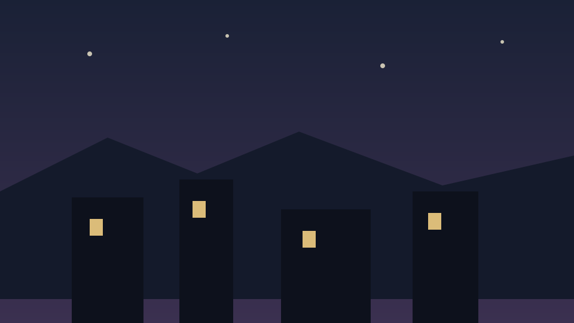

Over a picture
The light is laid over whatever is underneath and never reads it, so a picture with both bright and dark parts takes the same light across all of it. Choose the ink for the picture, not for the page.

Inside something that scrolls
The position is measured against the region at the moment the pointer moves, so scrolling the page or the box underneath cannot leave the light behind.
Scroll me, then move across
This panel is taller than the box it sits in. Scroll down and the light is still exactly under the pointer.
It is measured, not remembered: there is nothing cached that a scroll could make wrong.
Touch, and reduced motion
A finger lights nothing. A touch screen has no hover — a finger is either pressing or absent — and a glow left where one last touched is not a light following anybody, it is a smudge.
Under prefers-reduced-motion the light still follows the pointer,
because that is a direct answer to something the reader is doing. What goes is the
fading in and out: it is simply on where the pointer is, and off when it leaves.
Same light, no fade
Turn reduced motion on and move across this panel.